Oriental Scenery
یہ کتاب دراصل دو انگریز مصوروں کی پینٹنگز کی کولیکشن ہے اس میں شامل تمام خاکے اور پینٹنگز دو انگریز مصوروں جو آپس کے رشتے میں چچا اور بھتیجے لگتے تھے انہوں نے بنائی تھیں۔ چچا کا نام تھامس ڈینیل تھا اور بھتیجے کا نام ولیم ڈینیل تھا۔ یہ دونوں 1786 میں ہندوستان آئے اور 1793 تک یہاں کے مختلف علاقوں کا سفر کرتے رہے۔

1
ORIENTAL SCENERY. PART FIRST CONTAINING TWENTY FOUR VIEWS OF THE ARCHITECTURE, ANTIQUITIES AND LANDSCAPE SCENERY OF HINDOOSTAN. BY THOS & WM DANIELL LONDON. JANUARY 1. 1812.
مشرقی مناظر، حصہ اول — ہندوستان کی عمارتوں، نوادرات اور قدرتی مناظر کے چوبیس نظارے، از تھامس اور ولیم ڈینیئل، لندن، 1 جنوری 1812ء

2
ORIENTAL SCENERY. ONE HUNDRED AND FIFTY VIEWS OF THE ARCHITECTURE, ANTIQUITIES, AND LANDSCAPE SCENERY OF HINDOOSTAN. DRAWN AND ENGRAVED BY THOMAS AND WILLIAM DANIELL. LONDON: PUBLISHED BY THE AUTHORS. MDCCCXVI.
مشرقی مناظر — ہندوستان کی عمارتوں، نوادرات اور قدرتی مناظر کے ڈیڑھ سو نظارے، تھامس اور ولیم ڈینیئل کی بنائی اور کندہ کی ہوئی، لندن 1816ء
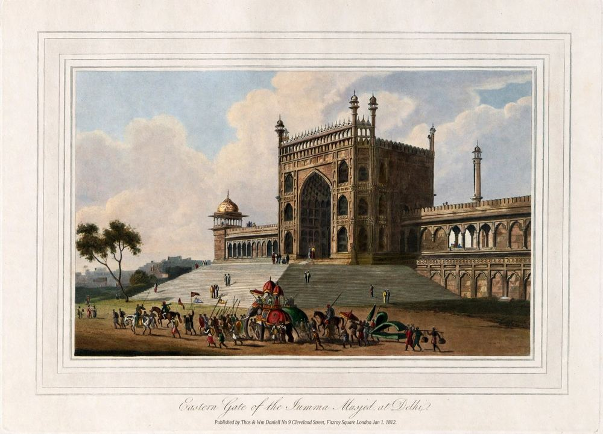
3
Eastern Gate of the Jumma Musjed, at Delhi.
دہلی میں جامع مسجد کا مشرقی دروازہ
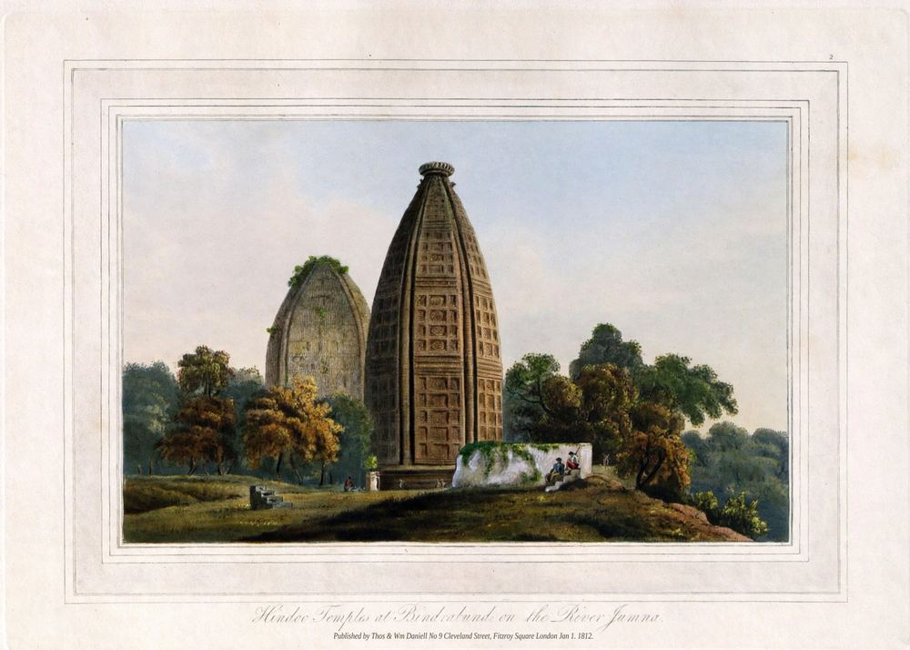
4
Hindoo Temples at Bindrabund, on the River Jumna.
دریائے جمنا پر بندرابن کے ہندو مندر

5
The Cotsea Bhaug, on the River Jumna, at Delhi.
دہلی میں دریائے جمنا پر قدسیہ باغ

6
Ruins of the ancient City of Gour.
قدیم شہر گوڑ کے کھنڈر
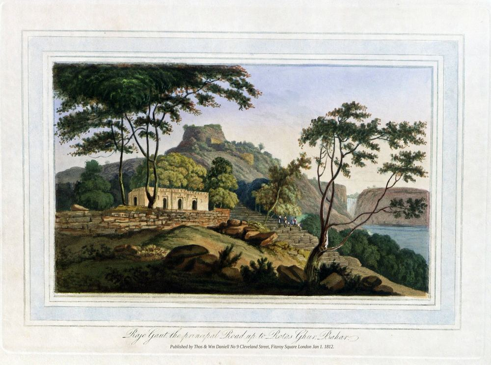
7
Roje Gaut, the principal Road up to Rotas Ghur, Bahar.
روجے گھاٹ، روہتاس گڑھ بہار کی طرف جانے والی اہم سڑک
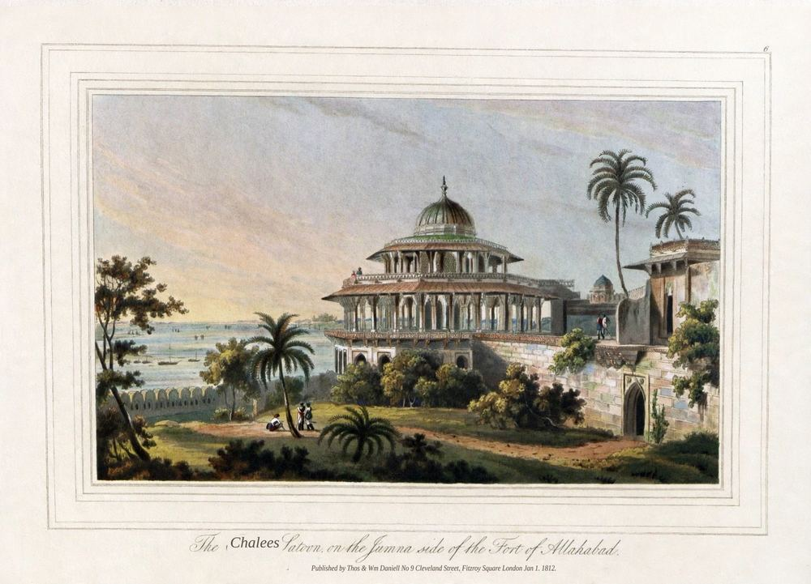
8
The Chalees Satoon, on the Jumna side of the Fort of Allahabad.
الہ آباد قلعے کی جمنا والی جانب چالیس ستون
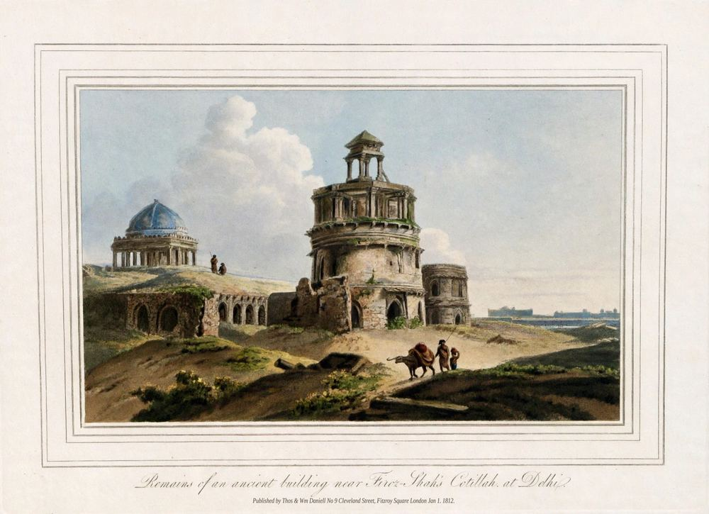
9
Remains of an ancient building near Firoz-Shah's Cotillah, at Delhi.
دہلی میں فیروز شاہ کے کوٹلہ کے قریب قدیم عمارت کے آثار

10
Part of the Palace in the Fort of Allahabad.
الہ آباد قلعے کے محل کا ایک حصہ
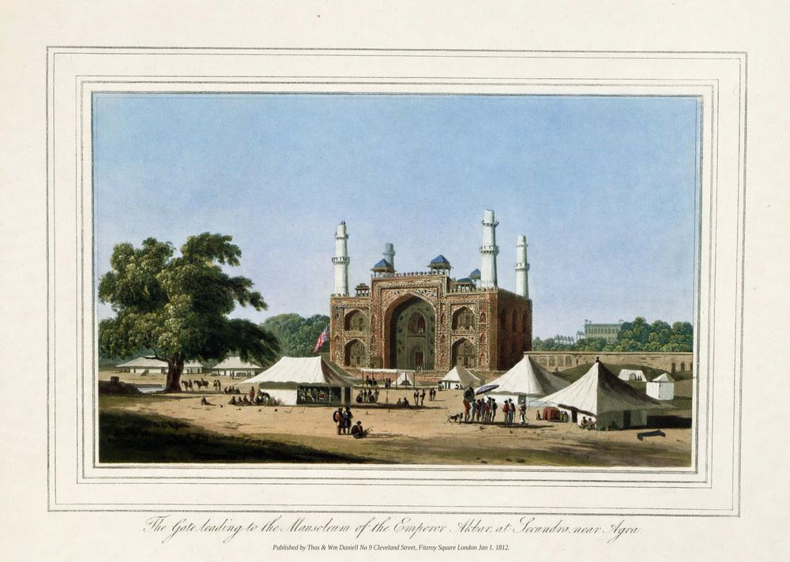
11
The Gate leading to the Mausoleum of the Emperor Akbar, at Secundra, near Agra.
آگرہ کے قریب سکندرہ میں شہنشاہ اکبر کے مقبرے کی طرف جانے والا دروازہ

12
Part of the City of Patna on the River Ganges.
دریائے گنگا پر پٹنہ شہر کا ایک حصہ
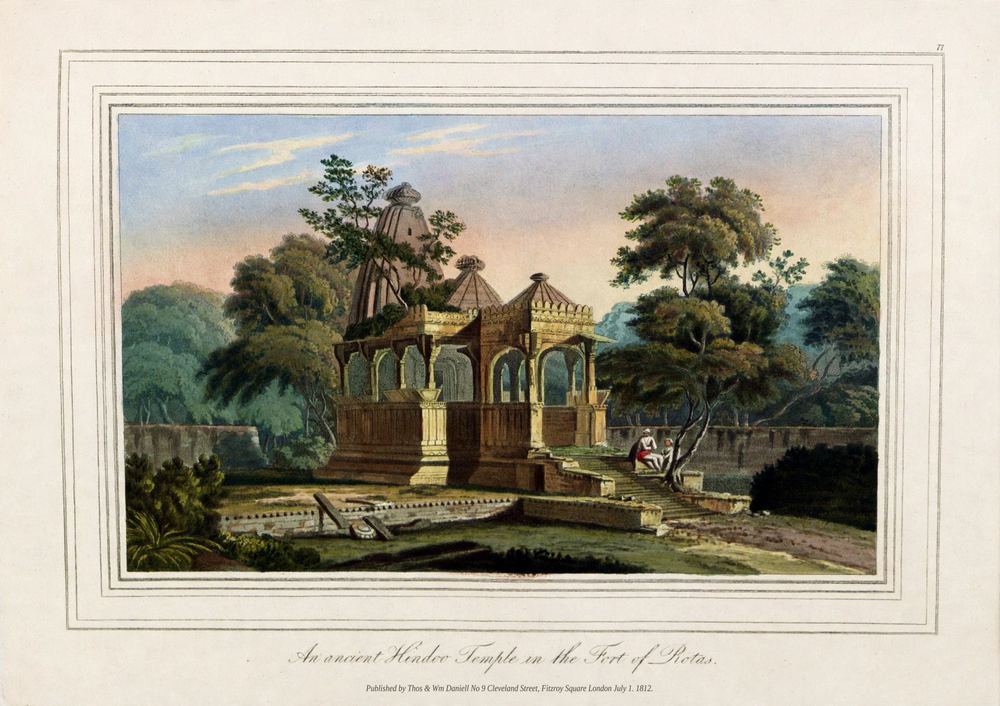
13
An ancient Hindoo Temple in the Fort of Rotas.
روہتاس قلعے میں قدیم ہندو مندر
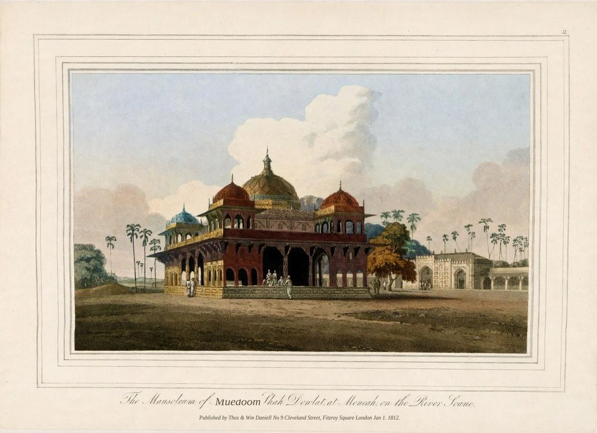
14
The Mausoleum of Muedoom Shah Dowlat, at Moneah, on the River Soane.
دریائے سون پر مونیا میں مخدوم شاہ دولت کا مقبرہ

15
Western Entrance of Shere Shah's Fort, Delhi.
دہلی میں شیر شاہ کے قلعے کا مغربی دروازہ
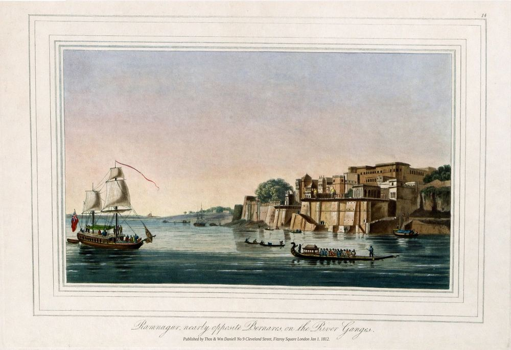
16
Ramnugur, nearly opposite Bernares, on the River Ganges.
دریائے گنگا پر بنارس کے تقریباً سامنے رام نگر

17
The sacred Tree at Gyah, in the province of Bahar.
صوبہ بہار کے گیا میں مقدس درخت

18
Dasasumade Gaut, at Bernares, on the River Ganges.
دریائے گنگا پر بنارس کا دشاشومیدھ گھاٹ

19
Mausoleum of Sultan Chuser, near Allahabad.
الہ آباد کے قریب سلطان خسرو کا مقبرہ

20
The principal Gate leading to the Taje Mahl, at Agra.
آگرہ میں تاج محل کی طرف جانے والا مرکزی دروازہ

21
Hindoo Temples at Agownee, on the River Soane, Bahar.
بہار میں دریائے سون پر اگاؤں کے ہندو مندر

22
View of part of Rotas Ghur, in Bahar.
بہار میں روہتاس گڑھ کے ایک حصے کا منظر
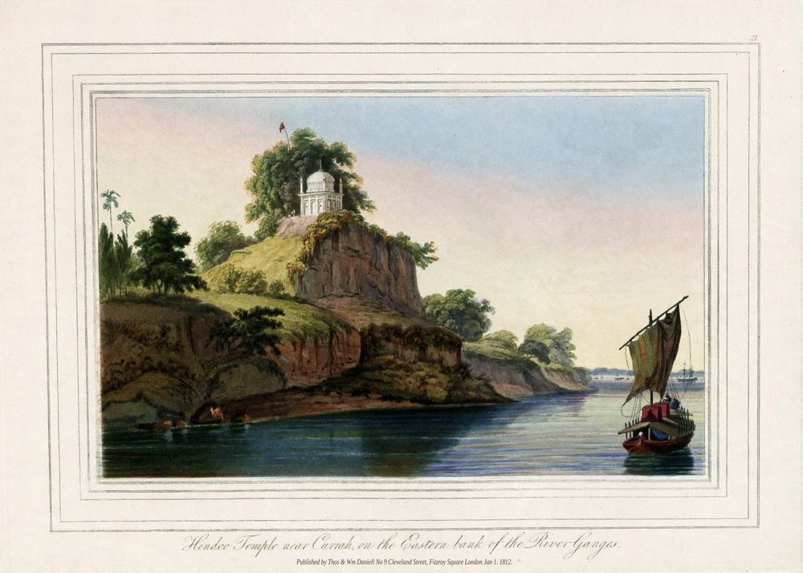
23
Hindoo Temple near Currah, on the Eastern bank of the River Ganges.
دریائے گنگا کے مشرقی کنارے پر کرہ کے قریب ہندو مندر

24
Mausoleum of Sultan Parveiz, near Allahabad.
الہ آباد کے قریب سلطان پرویز کا مقبرہ
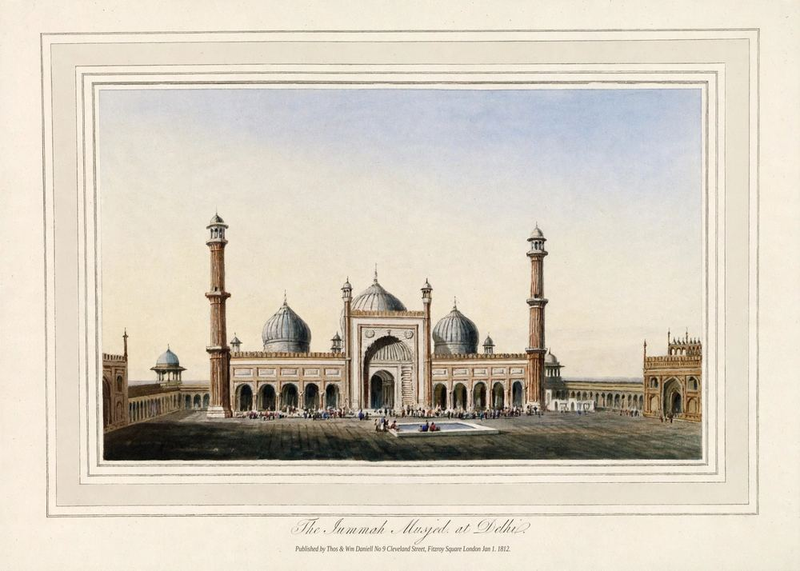
25
The Jummah Musjed. at Delhi.
دہلی کی جامع مسجد

26
Gate leading to a Musjed at Chunar Gur.
چنار گڑھ میں مسجد کی طرف جانے والا دروازہ
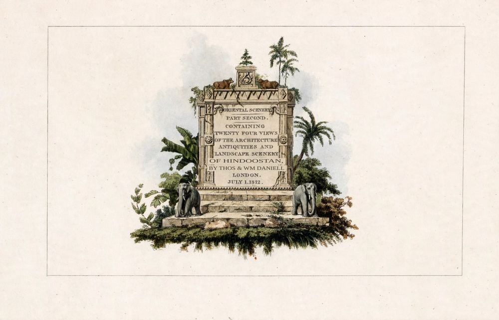
27
ORIENTAL SCENERY PART SECOND. CONTAINING TWENTY FOUR VIEWS OF THE ARCHITECTURE ANTIQUITIES AND LANDSCAPE SCENERY OF HINDOOSTAN, BY THOS & WM DANIELL LONDON. JULY 1.1812.
مشرقی مناظر، حصہ دوم — ہندوستان کی عمارتوں، نوادرات اور قدرتی مناظر کے چوبیس نظارے، از تھامس اور ولیم ڈینیئل، لندن، 1 جولائی 1812ء

28
Part of the Esplanade Calcutta.
کلکتہ کے ایسپلانیڈ کا ایک حصہ

29
View on the Chitpore road. Calcutta.
کلکتہ کی چٹپور سڑک کا منظر
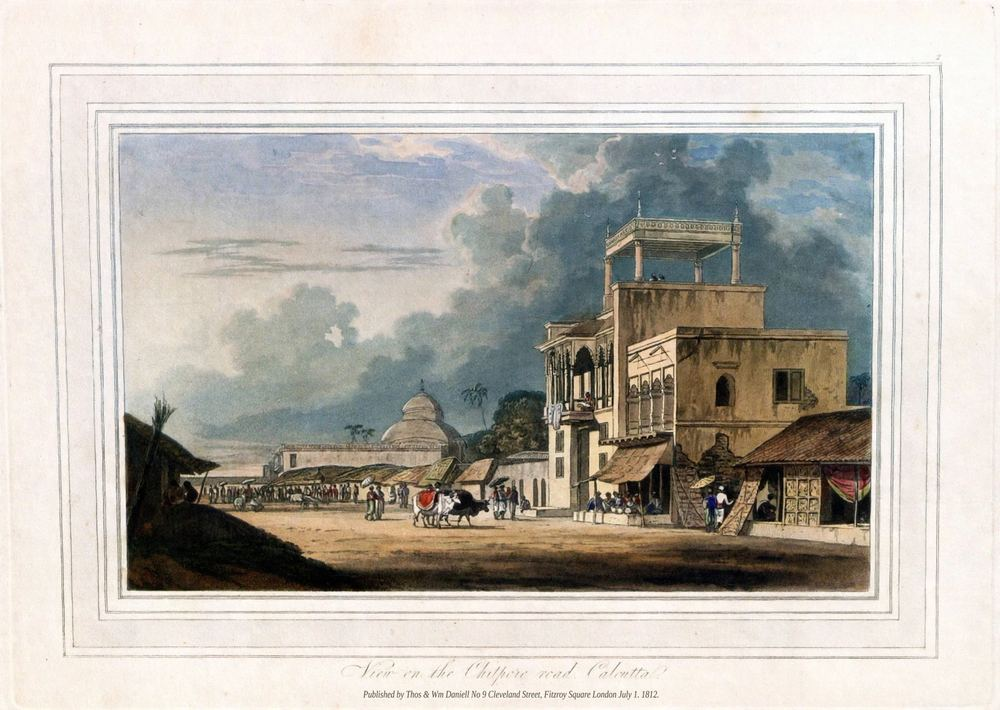
30
The Council house. Calcutta.
کلکتہ کا کونسل ہاؤس

31
The writers buildings. Calcutta.
کلکتہ کی رائٹرز بلڈنگز

32
Govinda Ram Mitters Pagoda. Calcutta.
کلکتہ میں گووند رام متر کا پگوڈا

33
Part of Cherenghee. Calcutta.
کلکتہ کے چورنگی کا ایک حصہ

34
Part of the Black Town. Madras.
مدراس کے بلیک ٹاؤن کا ایک حصہ
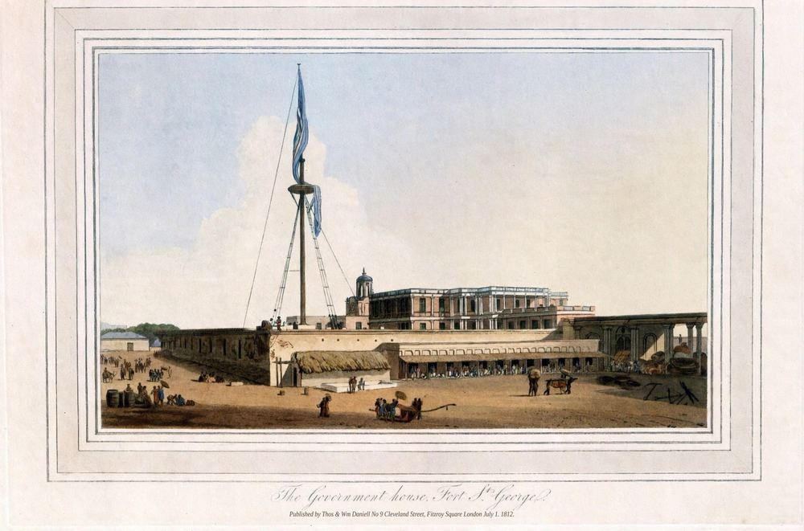
35
The Government house. Fort St. George.
فورٹ سینٹ جارج میں گورنمنٹ ہاؤس

36
The Armenian bridge. near St. Thomass mount.
سینٹ تھامس ماؤنٹ کے قریب آرمینیائی پل
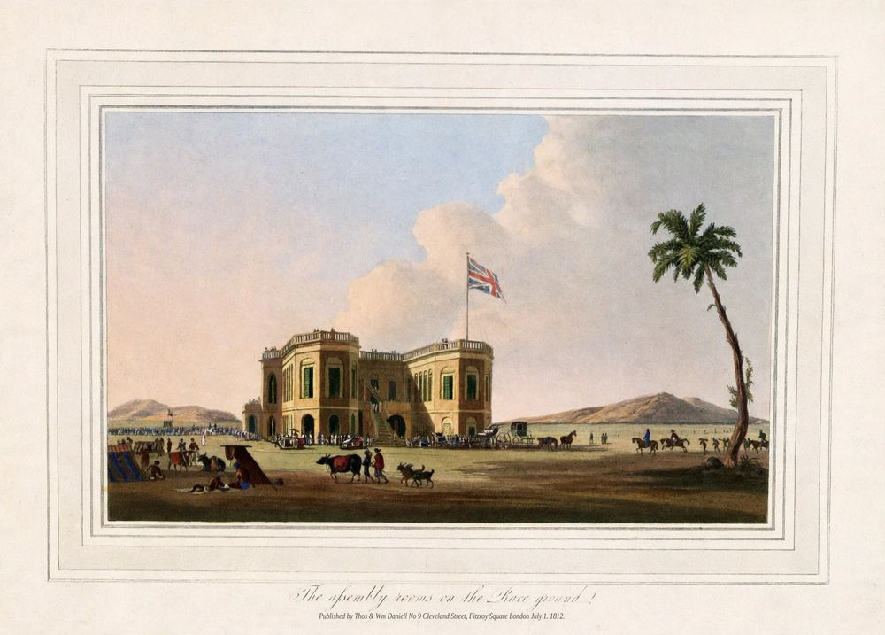
37
The assembly rooms on the Race ground.
ریس گراؤنڈ پر اسمبلی رومز

38
Western entrance of Fort St. George.
فورٹ سینٹ جارج کا مغربی داخلی راستہ
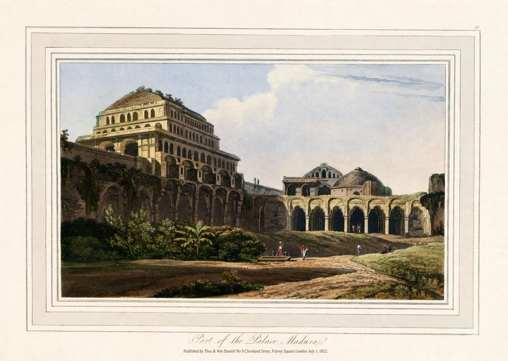
39
Part of the Palace. Madura.
مدورا کے محل کا ایک حصہ
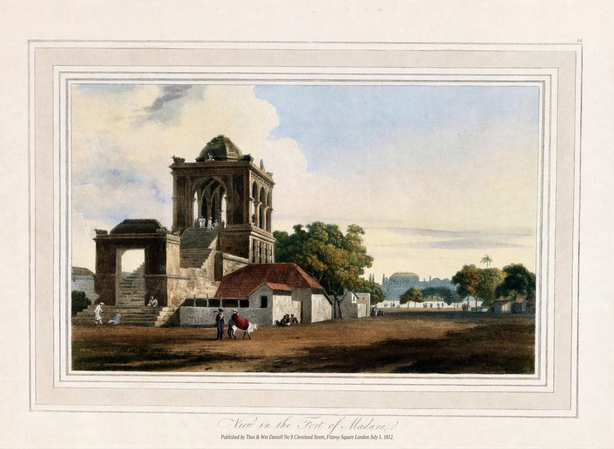
40
View in the Fort of Madura.
مدورا کے قلعے کے اندر کا منظر

41
Interior view of the Palace at Madura.
مدورا کے محل کا اندرونی منظر

42
An Hindoo Temple at Madura.
مدورا میں ایک ہندو مندر
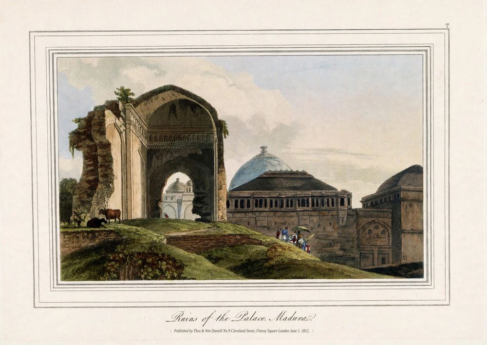
43
Ruins of the Palace. Madura.
مدورا کے محل کے کھنڈرات

44
Tremal Naig's Choultry. Madura.
مدورا میں ترمل نائگ کی چولٹری

45
The Rock of Tritchinopoly. taken on the River Cauvery.
دریائے کاویری سے لیا گیا ترچینوپلی کی چٹان کا منظر

46
The great Pagoda. Tritchinopoly.
ترچینوپلی کا عظیم پگوڈا

47
The Great Bull. an Hindoo Idol. Tanjore.
تانجور میں عظیم بیل، ایک ہندو بت
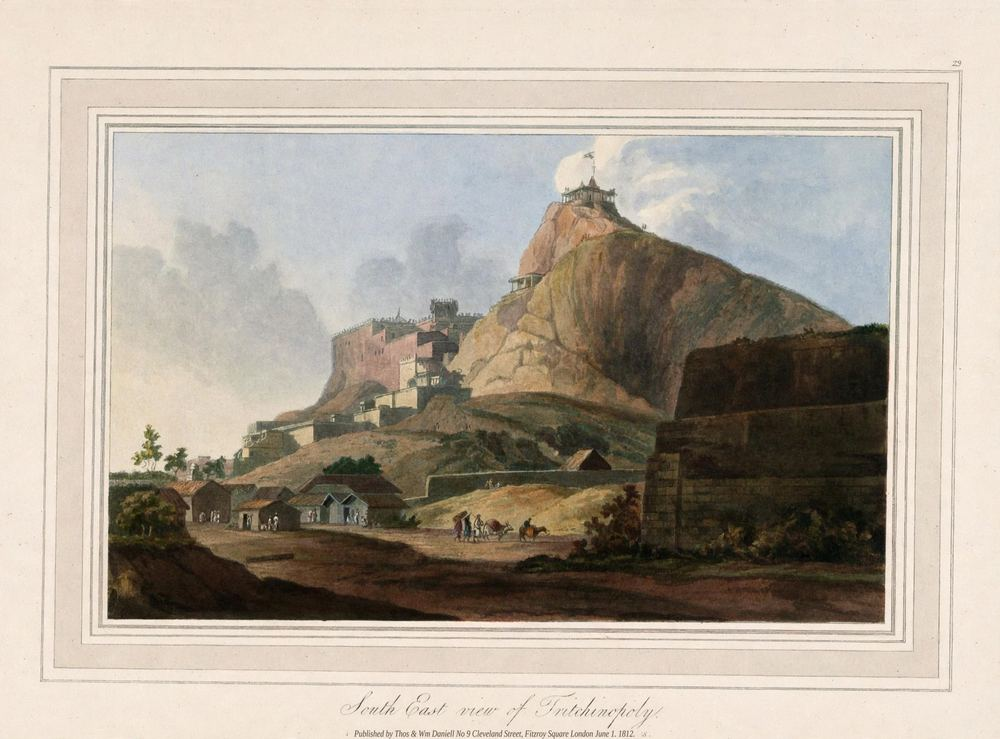
48
South East view of Tritchinopoly.
ترچینوپلی کا جنوب مشرقی منظر

49
The great Pagoda. Tanjore.
تانجور کا عظیم پگوڈا
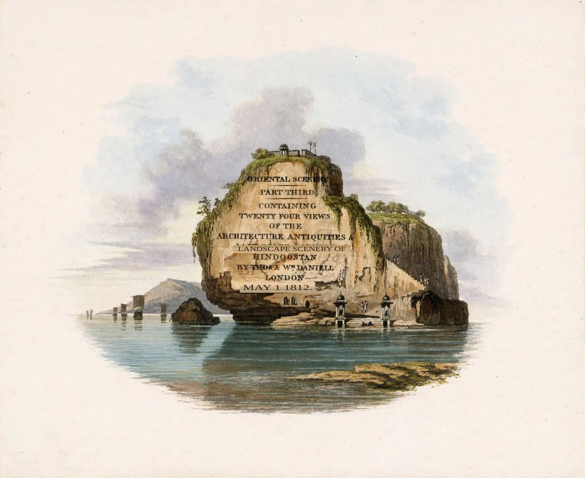
50
ORIENTAL SCENERY PART THIRD CONTAINING TWENTY FOUR VIEWS OF THE ARCHITECTURE ANTIQUITIES & LANDSCAPE SCENERY OF HINDOOSTAN BY THOS & Wm DANIELL LONDON MAY 1 1812.
مشرقی مناظر حصہ سوم، ہندوستان کی عمارتوں، آثارِ قدیمہ اور قدرتی مناظر کی چوبیس تصاویر پر مشتمل، از تھامس اور ولیم ڈینیئل، لندن یکم مئی 1812

51
Near the Fort of Currah, on the River Ganges.
دریائے گنگا پر قلعہ کرہ کے قریب

52
Ruins in Rotas Gur in Bahar.
بہار میں روتاس گڑھ کے کھنڈرات

53
Gate of the Loll Bhaug at Fyzabad.
فیض آباد میں لال باغ کا دروازہ
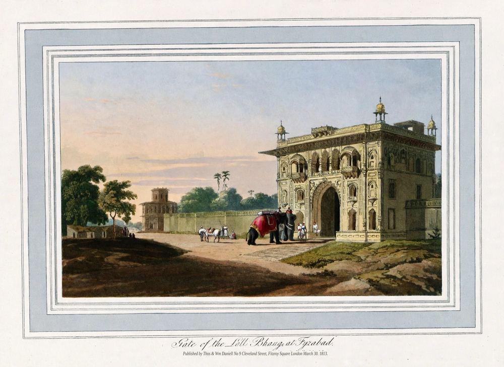
54
Mausoleum of the Ranee, Wife of the Emperor Jehangire, near Allahabad.
الٰہ آباد کے قریب شہنشاہ جہانگیر کی بیوی رانی کا مقبرہ
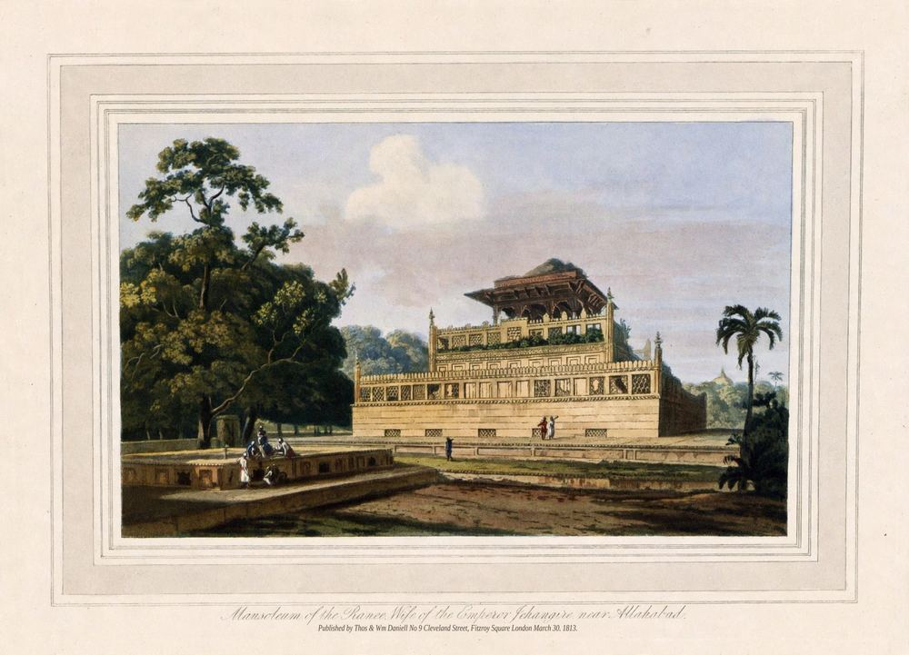
55
The Punj Mahalla Gate, Lucnow.
لکھنؤ کا پنج محلہ دروازہ

56
The Mausoleum of Amir Khusere, at the ancient City of Delhi.
پرانے شہر دہلی میں امیر خسرو کا مقبرہ

57
Ruins at Cannouge.
قنوج کے کھنڈرات

58
The entrance to the Mausoleums in Sultan Khusere's Garden near Allahabad.
الٰہ آباد کے قریب سلطان خسرو کے باغ میں مقبروں کا داخلہ

59
A Mosque at Juanpore.
جونپور کی ایک مسجد

60
Gate of a Mosque built by Hafiz Ramut at Pillibeat.
پیلی بھیت میں حافظ رحمت کی بنائی ہوئی مسجد کا دروازہ

61
Jog Dee. & Warrangur hill forts in the Barramahl.
بارہ محل میں جوگ دی اور ورانگر کے پہاڑی قلعے

62
Ryacotta. in the Barramahl.
بارہ محل میں رائے کوٹا
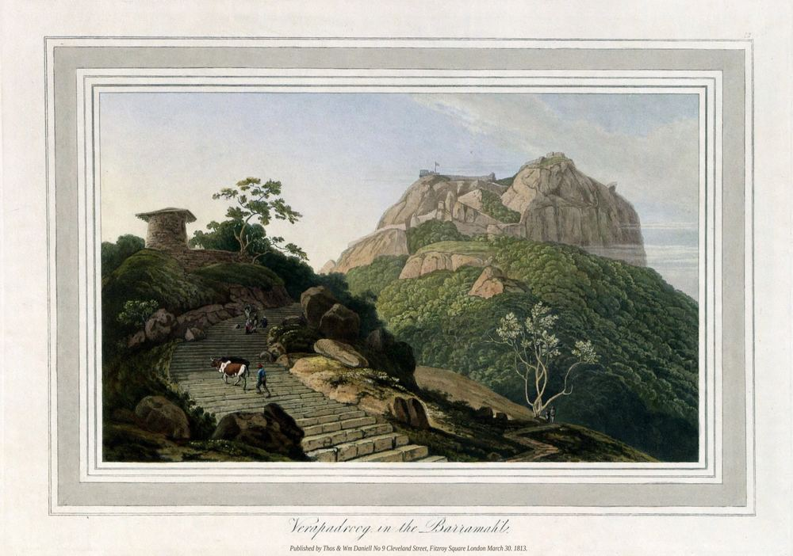
63
Vempadroog. in the Barramahl.
بارہ محل میں ویمپا دروگ
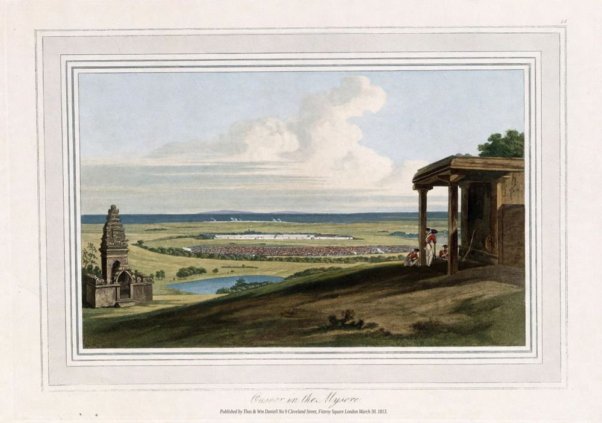
64
Ousoor in the Mysore.
میسور میں اوسور

65
View of Gyah, an Hindoo Town in Bahar
بہار کے ہندو شہر گیا کا منظر

66
Palace of Nawaub Sujah Dowla at Lucnow
لکھنؤ میں نواب شجاع الدولہ کا محل

67
Lucnow taken from the opposite bank of the River Goomty.
دریائے گومتی کے دوسرے کنارے سے لیا گیا لکھنؤ کا منظر

68
A Baolee near the old City of Delhi
پرانے شہر دہلی کے قریب ایک باؤلی

69
View at Delhi, near the Mausoleum of the Emperor Humaioon.
دہلی میں شہنشاہ ہمایوں کے مقبرے کے قریب کا منظر
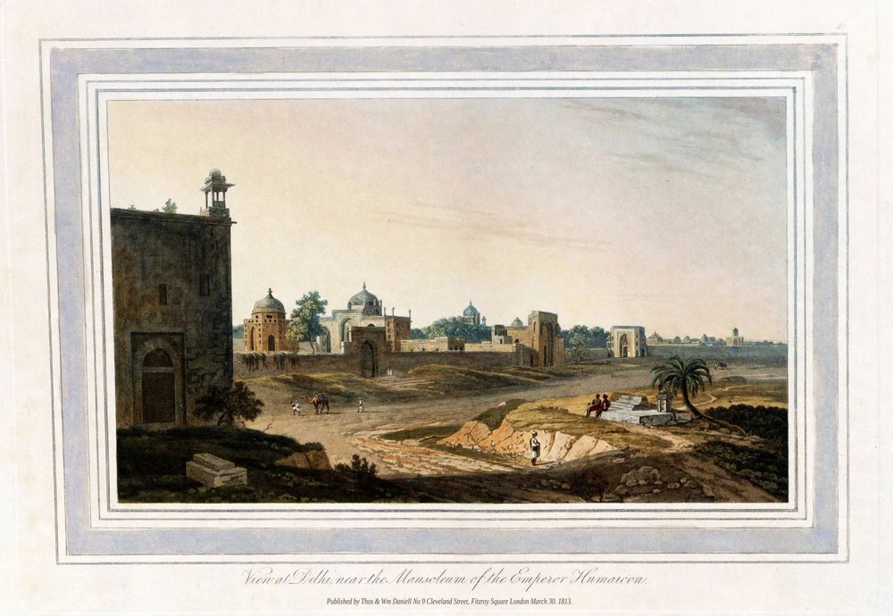
70
The Baolee at Ramnagar.
رام نگر کی باؤلی

71
View from the Ruins of the Fort at Currah, on the River Ganges.
دریائے گنگا پر کرہ کے قلعے کے کھنڈرات سے منظر
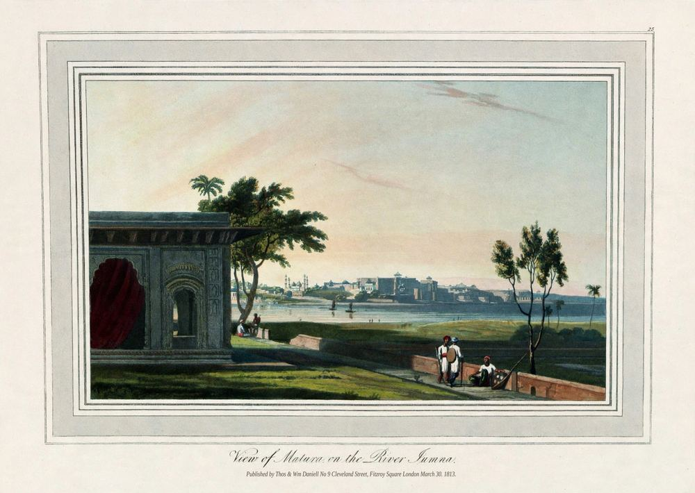
72
View of Matura on the River Jumna.
دریائے جمنا پر متھرا کا منظر
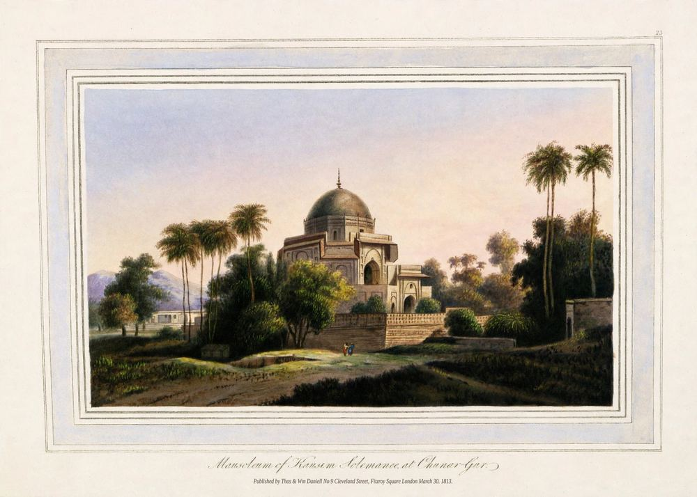
73
Mausoleum of Kansum Solemanee at Chunar Gur.
چنار گڑھ میں قاسم سلیمانی کا مقبرہ

74
Mausoleum of Nawaub Asoph Khan at Roje Mahel.
روج محل میں نواب آصف خان کا مقبرہ